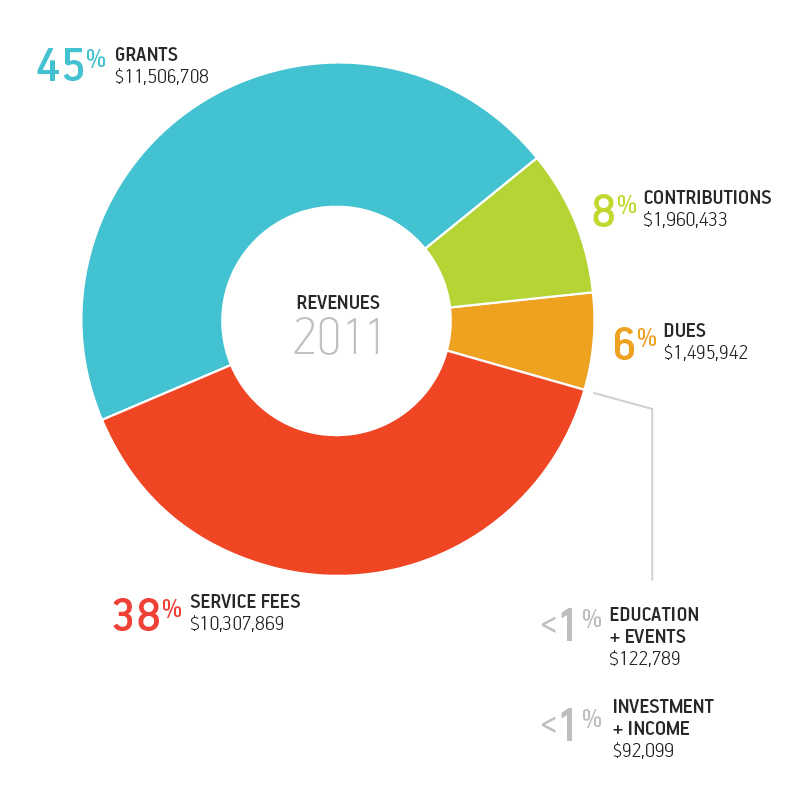

Letter from the
Chairman + President
Innovation is the lifeblood of our organization. Our mission is to provide the most effective business and clinical resources to our members.
The metropolitan Chicago area health care community faced unprecedented hurdles in 2011, and the Metropolitan Chicago Healthcare Council (MCHC) was also not immune to the challenges the year brought. This year, we have had to introspectively evaluate our organization, taking into consideration the needs of our members and the environment in which we are operating, and make some tough decisions to right-size and reorganize – something our member institutions are also doing.
Chairman
Dennis A. Reilly
President/Chief Executive Officer Little Company of Mary Hospital and Health Care Centers
President/Chief Executive Officer
Kevin Scanlan
Metropolitan Chicago Healthcare Council
All of the measures we implemented in 2011 were done to prepare for 2012 and beyond. The next few years promise to bring continued volatility in health care. We know that our members will need our support and resources more than ever before and now we feel prepared to respond to their needs swiftly and innovatively.
With the implementation of national health care reform, shrinking reimbursements, record numbers of uninsured, a wave of mergers and consolidation, and threats to nonprofit hospitals' tax exemptions, our member hospitals have had to continue doing more with less while still furthering their mission of providing quality care to the communities they serve. Our current economic climate and the unfortunate positioning of virtually every branch of government in the state and nation continue to impact our members' ability to provide care. Even though the health care safety-net is being stretched thin, hospitals in the metropolitan Chicago region provided $3.5 billion in charitable benefits to their communities, including $1 billion in free care.
Innovation is the lifeblood of our organization. Our position enhances our ability to be entrepreneurial and nimble in our mission to provide the most effective business and clinical resources to our members in this dynamic health care market. MCHC's unique business structure allows us to be proactive in developing programs to help our members meet the challenges that will impact them in the future. In fact, one of our largest programs, the MetroChicago Health Information Exchange did not even exist in 2010.
The manner in which health care is delivered will continue to evolve in the coming years, and as it does, MCHC will continue to help our 154 members serve their communities and act as their trusted voice and resource.
Groundbreaking Communication
MCHC served as the unified voice for the health care community in Chicagoland.
Government and Public Relations
2011 brought about a merger between MCHC's Public Relations and Government Relations departments to streamline our efforts in support of our membership. This combination allows MCHC to better coordinate our messaging to members, media, elected officials and other stakeholders.
Acting as the trusted collective voice for hospitals in the metropolitan Chicago area, MCHC advocated for members on key public policy issues at the local, regional and national levels. MCHC continued to play a leadership role in national advocacy efforts to protect Medicare and Medicaid reimbursement in 2011. MCHC and its members implemented the "Enough is Enough" advocacy campaign that included in-district meetings and Capitol Hill visits. MCHC also sponsored a Hill briefing with health care staffers of our congressional delegation. The briefing delivered a unified message on the significant negative impact that proposed cuts to Medicare and Medicaid would have on both access to care and the high-paying health care jobs that hospitals generate in the metropolitan Chicago region. MCHC will continue to work with our congressional delegation on reimbursement issues and other key hospital initiatives.
At the local level, City of Chicago Mayor Rahm Emanuel backed away from his push to eliminate the nonprofit water fee waiver, thanks to MCHC and its member hospitals' aggressive advocacy efforts. MCHC provided leadership on other important issues tackled by the Chicago City Council such as the availability of Level I Trauma services and the impact of the state's Medicaid cuts on the city's hospitals.
In light of the recent rulings by the Illinois Department of Revenue on hospitals' tax-exempt status, MCHC is engaging local municipalities and county boards in supporting a resolution urging the Illinois General Assembly and Gov. Pat Quinn to consider the wide array of health programs and services that nonprofit hospitals provide that help address the diverse health needs of the residents in the metropolitan Chicago region. MCHC is receiving a positive response and will continue to build support for its member hospitals.
Throughout the year, MCHC served as the unified voice for the health care community in the metropolitan Chicago region. MCHC kept members abreast of local, regional and national government happenings through its weekly government relations newsletter. To amplify the voice of the metropolitan Chicago health care industry, MCHC sent more than 7,000 messages to local and federal lawmakers through CapWiz, an online grass-roots advocacy tool.
In 2011, MCHC also issued more than 70 press releases, media advisories, whitepapers, articles and other publications to keep members, stakeholders and the public informed about the health care issues impacting the greater Chicago region. MCHC developed and released five advocacy videos that demonstrate the human side of the $3.5 billion in charitable community benefits our member hospitals provide to our region.
Additionally, MCHC hosted two education events for members' public relations staff in 2011: a session on reputation management and the ever-popular annual media panel. MCHC's Public Relations Committee helped develop programming of interest to members and rounded out the year by electing a new chair and vice chair.
Membership Services
The Membership Services department welcomed three new associate members to MCHC this year, increasing MCHC's membership to 154 hospitals and health care organizations. MCHC hosted 115 educational sessions in 2011, reaching more than 3,400 participants.
Membership Services continues to send out the quarterly newsletter, Trustee Matters, which contains important information, tools and resources to help hospital trustees improve their knowledge and skills in governance issues and to enable them to better serve their organizations and communities.
Forty-five member organizations throughout the metropolitan Chicago area gathered to recognize more than 750 health care professionals during MCHC's 57th Annual Luncheon. The event was May 11 at the United Club in Soldier Field. NFL cornerback Charles Tillman was the keynote speaker, and Brittney Payton, host of the TV show "Chicago's Best," was the emcee. The luncheon is a way for MCHC and its members to celebrate their extraordinary employees and the vital role they play in caring for the communities they serve.
Another notable event was MCHC's Annual Meeting, where the membership elected new board members and attendees heard about the long-term outlook of the health care industry.
Advancements in Caring
MCHC helps members provide safe, high-quality care by them up to date on the newest regulations and best practices in patient care.
Clinical Services
MCHC's Clinical Services department helps members provide safe, high-quality care by keeping them up-to-date on the newest regulations and best practices in patient care.
Recognizing the importance of physician leadership in national health care reform, MCHC forged a partnership with the American College of Physician Executives (ACPE), the nation's foremost leader in physician leadership education, to provide affordable, local educational programming for area physician leaders. More than 120 physician leaders attended the inaugural session in October. MCHC will continue to host ACPE programs for area physician leaders quarterly for the next two years. Attendees can earn continuing medical education credits by participating in the courses and credits toward certification as a physician executive.
MCHC continued to help member hospitals prepare for the unexpected, hosting two full-scale and six table-top emergency preparedness drills in 2011. In May, a full-scale exercise was held to test response to a massive surge of pediatric casualties after a catastrophic earthquake. In September, a full-scale drill was held in conjunction with O'Hare International Airport. Forty-four state, federal and local agencies, more than 700 individuals and 55 metropolitan Chicago area hospitals participated in the full-scale exercises.
In conjunction with our Advanced Practice Nurse (APN) Forum, MCHC developed a new, expanded survey regarding APN practices that also included physician assistants (PA). One hundred organizations, representing more than 2,100 APNs and PAs, participated in the 2011 APN/PA survey. Data gathered by the survey will be used to help assess current APN/PA practices and identify opportunities for improvement in APN/PA privileging, orientation, competency assessments, and billing/reimbursement processes.
MCHC continued to offer numerous educational events for clinical staff, including programs on multidrug-resistant bacteria and ethical issues in responding to pandemics. Additionally, MCHC released best practices guidelines on topics such as safe patient moving, mitigating the risk of bedbugs in health care facilities, emergency preparedness curriculum, and infection prevention and control.
Illinois Helps
MCHC continues to coordinate the statewide emergency system for advanced registration of volunteer health professionals. Illinois Helps, a database for all health care professionals, is a Web-based system used to register, verify and credential volunteer health care professionals before a major disaster or public health emergency occurs.
Illinois Helps has 3,700 registered volunteers. Additionally, 40 hospitals across Illinois have registered more than 12,000 health care professionals with the database.
In the event of an emergency, Illinois Helps will be of great use to hospitals that need to verify the licenses and credentials of the professional health care volunteers who come to their facilities to care for the influx of patients.
Midwest Alliance for Patient Safety
The Midwest Alliance for Patient Safety (The Alliance), a nonprofit patient safety organization (PSO), is a joint venture between MCHC and the Illinois Hospital Association (IHA). Its mission is to promote the adoption of best practices to measurably improve the delivery of safe and quality care to all patients.
The Alliance has 73 hospital members from throughout Illinois. Membership continues to be free. As a federally certified PSO, The Alliance provides a safe and protected environment for Illinois hospitals to share, learn and improve with a goal to ultimately eliminate patient harm. In 2011, The Alliance hosted its initial "safe tables" to discuss prevention of medication errors. The next safe table, focusing on the prevention of patient suicide, is planned for March 2012.
Health Information Exchange
2011 was an exceptional year for MCHC's newest venture, the MetroChicago Health Information Exchange (HIE), a technological platform that allows hospitals and health care providers to securely exchange patient information. By allowing for the flow of information between providers wherever a patient seeks care, the MetroChicago HIE helps health care professionals provide safe, high-quality patient care more quickly and cost-effectively.
The greater Chicago health care community is tremendously supportive of the efforts to stand up the MetroChicago HIE. In fact, 74 hospitals to date have signed letters of commitment to become founding members of the MetroChicago HIE, a testament to our members' dedication to improving patient care.
In April, MCHC announced its choice to use Microsoft Corp., CSC and HealthUnity Corp. technologies to power the MetroChicago HIE. These technologies will give the MetroChicago HIE a powerful engine to quickly aggregate and analyze data across patient cohorts and populations, enabling care transformation.
Throughout the year, the first cohorts of early adopter hospitals began setting up the infrastructure to implement the MetroChicago HIE. MCHC formed the MetroChicago HIE advisory council, a governance body comprised of 13 industry representatives to provide governance and guidance to the HIE through implementation. Additionally, more than 100 member representatives were involved in educational and implementation meetings and seminars in 2011.
Working closely with the Chicago Department of Public Health, MCHC helped to secure millions of dollars in city grant funding to offset the cost for system integration. These grants were crucial, particularly for the city's critical-access hospitals that otherwise may not have been able to afford the infrastructure necessary to participate in the HIE.
MCHC is also home to the Illinois Health Information Technology Regional Extension Center's (IL-HITREC) northeast satellite office that assists primary care physicians statewide in implementing certified electronic health record (EHR) systems. The IL-HITREC assisted 1,300 physicians in setting up EHR systems in 2011, further promoting health care connectivity in Illinois.
Illinois Video Interpreter Network
The Illinois Video Interpreter Network (IVIN) provides participating hospitals with instantaneous, cost-effective medical interpretation in hospitals and other health care settings. In less than 60 seconds, clinical staff can access qualified interpreters of American Sign Language (ASL) and up to 180 foreign languages for their patients via video or telephone, 24 hours a day, seven days a week.
As opposed to phone-only interpretation, video units allow for visual cues that improve interpretation and clinical outcomes. IVIN has more than 120 medical interpreters who have completed an approved training program of at least 40 hours and passed an approved health care interpreter skills test.
IVIN is a solution to help with the challenges hospitals face in providing care to diverse patient populations. The number of patients requiring interpretation is increasing and will continue to increase because of regulations included in health care reform.
Providing foreign language and ASL interpretation improves patient-provider communication to support safety and quality. It allows patients and family members who speak a foreign language or ASL the ability to participate actively in care from admission to discharge.
Illinois Poison Center
MCHC is home to the Illinois Poison Center (IPC), a nonprofit health service that provides comprehensive and trusted information and treatment advice on potentially harmful substances via a free, confidential 24-hour hotline staffed by medical experts. The IPC is the nation's oldest poison center and the only center in Illinois. Since 1997, when the IPC became a program of MCHC, its reach has grown statewide. Today it serves more than 12.9 million residents living in Illinois' 102 counties.
The IPC serves as the state's leading source of advanced toxicology training and consultation for health care professionals. It also offers education on poison prevention and information on potentially harmful substances to the public through community outreach and online training programs. The IPC saves lives, improves patient care and saves the people of Illinois $50 million annually due to fewer 911 calls, doctor and emergency department visits, and reduced time spent in hospitals. The IPC received 86,680 calls in 2011.
The IPC provides more than 50 consults per day to hospital staff and other health care providers. In 2011, this amounted to 20,911 calls, a 53 percent increase since 2003. With assistance and information from the IPC, 40 percent of patients were treated and released from emergency departments and clinics; an additional 31 percent were admitted to an intensive care unit or medical beds. The remainder were medically cleared, admitted to psychiatric beds, or opted out of medical treatment. IPC treatment advice to participating hospitals and health care providers saved lives, prevented unnecessary and costly treatment, and resulted in substantial savings.
In addition to valuable hotline services, the IPC has made critical contributions to regulatory decisions in Illinois. All of the calls the IPC receives become part of a complete, real-time database on acute hazardous exposures in Illinois. This database and IPC call center experts serve as the early warning system for potential public health threats through hazard identification, surveillance and situational awareness. The data is combined with similar data from other poison centers to create a poison center database that provides a national picture of emerging trends. In 2011, the poison centers' surveillance system provided instrumental data about the emerging trend of synthetic drugs like K2 and “baths salts,” as well as the increase in button battery hazards. Working closely with the legislature and government agencies such as the Illinois Attorney General's office, the IPC was able to offer real-time data and information to assist in public education and legislative discussions. The IPC and national poison center data is increasingly being used to bring about regulatory change that prevents disease and injury in the communities it serves.
Development
MCHC's Grant Development department worked throughout the year to obtain crucial funding that directly benefited our member institutions and their patients.
In 2011, MCHC was awarded $11.5 million in grants through public, foundation and corporate funding. These grant dollars supported emergency preparedness planning efforts, training exercises and the purchase of pharmaceuticals, supplies and equipment needed by hospitals in mass casualty events. Grant dollars also funded the Illinois Poison Center, health information technology initiatives and workforce development programs.
MCHC's grant development strategy is unique among membership organizations. MCHC takes a leadership and coordination role in applying for grant opportunities in collaboration with our members, community organizations and public partners. Grant funding not only furthers MCHC's mission and serves our members, but allows MCHC to be less reliant on dues through its diversification of revenue streams.
MCHC welcomes its membership to discuss their grant development and grant administration needs with MCHC. MCHC's grant development and administration experience can assist organizations in effectively expediting the grant development, application and post-award process.
Business Solutions for Success
MCHC continues to be the best local resource on issues impacting hospitals' core revenue cycle functions.
Business Resource Services
MCHC's Business Resource Services department provides members with comprehensive market data, consulting services and operational programs designed to improve their financial performance. Using MCHC's business solutions, members can ensure compliance with complex industry regulations, payment rules and documentation requirements to comply with and receive reimbursement from government and private payers.
MCHC introduced several programs this year, including ChargeMD, AlertMD, e-Scan and the ICD-10 suite, to assist members in improving not only their business operations but also patient safety and access to care.
MCHC's wage index services help hospitals capture and report accurate wage index data to ensure that each hospital receives equitable reimbursement from Medicare. In 2011, MCHC coordinated and received approval to reclassify hospitals in Lake County to Cook County for the next three years, giving the Lake County hospitals the opportunity to select the highest wage index factor. Taken as a whole, the market's coordinated efforts for wage index review by MCHC have resulted in favorable reimbursement. Federal fiscal years 2009- 2012 brought in an estimated $85.3 million in additional Medicare reimbursement.
MCHC's Wage Index Navigator had another successful year assisting member hospitals with the wage index review process. Introduced in 2010, the Navigator is a one-of-a-kind, dynamic web-based software that streamlines hospitals' wage index reporting, improving accuracy and reducing reporting costs, to achieve the best Medicare reimbursement outcomes. The Navigator was selected as one of the top 75 finalists for the 2011 Chicago Innovation Awards, out of a field of more than 400 nominees. This acknowledgement demonstrates that MCHC is not only a trusted resource for our members, providing cutting-edge business solutions, but also an industry leader.
This year the Occupational Mix Analyzer, a supplement to the Navigator software, was developed to assist hospitals in compiling the occupational mix surveys, which are required every three years by the Centers for Medicare and Medicaid Services (CMS). Interactive instructions and user-friendly edit features allows hospitals to quickly and correctly identify all allowable paid hours and categorize data into the occupational mix job categories. This new software demonstrates the innovative adaptability of the Navigator software and how it can be revised to meet new CMS reporting requirements.
RevSight, MCHC's data-mining software, analyzed more than 6 million patient accounts, along with 21 million financial transactions and 300 million freeform notes in 2011. This software helps hospitals identify accounts that have become out of protocol, which causes delays in payments and excessive staff time. In 2011, the software was enhanced to derive revenue cycle staff performance information.
MCHC's Supply Chain Services continued to enhance the financial strength of members in 2011 through margin improvement and spending reduction. MCHC, with partner MedAssets, helped participating members reduce expenses by 5 to 15 percent by using flexible contracting strategies, clinical consulting expertise and innovative technology solutions. 2011 also marked the second year for the Virtual Resource Center (VRC), MCHC's live online trade show and resource conference. MCHC's VRC operates 24 hours a day, seven days a week, and can be accessed from any location. In addition, a comprehensive library hosts a wealth of expert content on a variety of topics in health care. During 2011, staff from more than 75 hospitals representing more than 28 disciplines registered and visited the VRC.
Patient Financial Services
MCHC's Patient Financial Services (PFS) program continued to be the best local resource on issues impacting hospitals' core revenue cycle functions. PFS serves as member hospitals' collective voice to government agencies and the payer community on day-to-day concerns. It is the go-to source for the latest information needed for making good operational decisions, ensuring compliance with regulatory requirements, and facilitating accurate and timely payment.
In 2011, MCHC identified new revenue opportunities from incorrectly paid outpatient radiology claims, shared best practices on filing quarterly credit balance reports to prevent unexpected suspension of Medicare payments, and provided insights for more timely resolution of claims for veterans. MCHC worked to ensure that member hospitals were steadily progressing toward the national implementation of ICD-10 codes for reporting diagnoses and inpatient surgical procedures. MCHC introduced a one-day intensive ICD-10 Kick-Start program to ensure late adopters were taking the initial steps for this new clinical code set, which will impact every aspect of a hospital's business and a physician's practice.
MCHC was also the trusted resource for hospitals on all aspects of the Medicare Recovery Audit Contractor (RAC) program. MCHC worked closely with federal government agencies and contractors throughout the year to address hospitals' questions and concerns, and provided detailed information to hospitals so that they could educate staff and physicians, revise internal processes, and evaluate and minimize their financial risks.
Ongoing advocacy efforts by the Committee on PFS contributed to new administrative rules that allow for Medicaid payment in hospital-owned off-site clinics and outpatient departments that qualify for provider-based status under Medicare's decade-old regulations. The Committee on PFS meets regularly to discuss common concerns and solve hospitals' shared revenue cycle challenges. In May, 17 former Committee chairpersons joined the current Committee on PFS for a luncheon celebrating more than 25 years of serving MCHC member institutions.
Greater Chicago Claim Services
In 2011, the veteran Chicago Hospital Risk Pooling Program (CHRPP) staff formed a full-service third-party administrator to provide litigation management services to Chicago area hospitals, the Greater Chicago Claim Services (GCCS). The majority of CHRPP member hospitals joined this new venture at the onset. GCCS members can rely on a staff with more than 100 years of exclusive regional malpractice claims and litigation experience, as well as name recognition in the legal community and a reputation as a credible and formidable advocate for hospitals.
Momentum for Our Workforce
MCHC provided health insurance coverage for more than 125,700 people in 2011.
Employee Benefit Plans and Trust
MCHC's Employee Benefit Plans and Trust (EBP) offers comprehensive benefit programs with the best terms for both employees and members. Hospitals are the most unique employers and MCHC's knowledge of the many nuances of hospitals as an employer is a benefit that the EBP Trust brings to its 65 participating member hospitals. In 2011, MCHC provided health insurance coverage for more than 125,700 people, including member employees and their dependents.
In an effort to help members provide the best health plans for their employees and meet market demands while keeping costs down, MCHC will now be offering member hospitals two options for administrative services for their employee health plans. In addition to MCHC's longstanding and continued partnership with Blue Cross Blue Shield, EBP will offer members plans through Humana. The Humana offering brings the service, innovation and flexibility needed to help MCHC members navigate the complex needs of their employee health plans. Humana was selected this year after a process that included a market assessment and guidance from the EBP Advisory Council.
Institutions participating in MCHC's EBP program also have access to a wellbeing specialist who collaborates with member hospitals to build health strategies and recommend best practices for wellness programs. MCHC's wellness initiative made significant progress this year with 12 core participating hospitals.
Human Capital Services
MCHC's Human Capital Services (HCS) department provides members with assistance in recruitment, pre-employment assessments, background verifications and staff development. The department also helps members contain unemployment compensation costs and provides valuable compensation and metrics data.
To help hospitals create a safer environment for staff, patients and guests, MCHC expanded our fingerprint background check system to include 35 member hospitals.
In 2011, MCHC continued to compile compensation data for 240 management and non-management positions and gathered information on employee benefits from more than 60 health care organizations. In addition, MCHC implemented a new data collection tool with Excel submission capability resulting in the collection of more accurate data and more submission options for users. A new regional physician compensation and productivity survey was introduced this year by MCHC and partner Sullivan, Cotter and Associates.
MCHC's Unemployment Compensation Administration Program (UCAP) assists members in controlling the cost of unemployment claims. This year, five new members joined UCAP and a new claims tracking program was implemented to provide members with more report options.
With the advent of health care reform, MCHC will continue to enhance its HCS offerings to ensure that members receive a full slate of value-added services to cover the entire employment lifecycle.
Health Care Workforce Institute
In 2011, MCHC's Health Care Workforce Institute furthered its efforts to support the growth of the health care workforce in the metropolitan Chicago area. Hospitals in the region are facing a growing workforce shortage. In Illinois alone, there will be an estimated shortage of 21,000 nurses by 2022, according to the Illinois Department of Employment Security.
In September, MCHC celebrated the grand opening of the Instituto Health Sciences Career Academy (IHSCA), a charter high school focusing on health care sciences to prepare students for success not only in higher education but also in entry-level positions in health care. At capacity, IHSCA will serve 600 students and address the profound shortage of Latinos in the health care field. MCHC facilitates partnerships between the school and local hospitals and also plays a role in validating the school's health science curriculum.
One of the greatest challenges in addressing the workforce shortage is securing more educators to teach our next generation of health care professionals. In 2011, MCHC continued promoting the Clinical Faculty Academy (CFA) program, which helps develop master's-prepared nurses for the role of clinical nurse educators to increase the health care faculty workforce. In 2011, 84 participants completed the program, providing more educators to teach future nurses and health care professionals.
To maximize the use of clinical space in nursing schools, MCHC's Illinois Clinical Scheduler, a streamlined, Web-based tool, was used to facilitate the placement of 2,753 students in 2011 and scheduled students for approximately 361,000 hours of clinical education.
Board of Directors
Chairman
Dennis A. Reilly
President/Chief Executive Officer Little Company of Mary Hospital and Health Care Centers
Chairman-Elect
Barry C. Finn
President/Chief Executive Officer Rush-Copley Medical Center
Treasurer
David L. Crane
President/Chief Executive Officer Adventist Midwest Health
Officer-at-Large
John DeNardo, MPH, FACHE
Chief Executive Officer University of Illinois Healthcare System
President/Chief Executive Officer
Kevin Scanlan
Metropolitan Chicago Healthcare Council
Patricia Cassidy President Gottlieb Memorial Hospital
Brad Copple President Kishwaukee and Valley West Community Hospitals
David A. DiLoreto, M.D. Executive Vice President Resurrection Health Care
Michael S. Eesley Chief Executive Officer Centegra Health System
William T. Foley President, Chicago Market Vanguard Health Systems
Kurt Johnson President/Chief Executive Officer Ingalls Health System
Phillip Kambic President/Chief Executive Officer Riverside Medical Center
Dennis M. Murphy Executive Vice President and Chief Operating Officer Northwestern Memorial HealthCare
Susan Nordstrom Lopex President Advocate Illinois Masonic Medical Center
Tracy Rogers Vice President and Chief Operating Officer Alexian Brothers Health System
Joanne Smith, M.D. President/Chief Executive Officer Rehabilitation Institute of Chicago
Sister Elizabeth Van Straten President/Chief Executive Officer St. Bernard Hospital and Health Care Center
Thomas L. WrightPresident Delnor Hospital
Conferences & Committees
MCHC Committees and Forums
- Advanced Practice Nurses/ Physician Assistants Forum
- Career Advancement Committee
- Care of Psychiatric Patients in Emergency Departments Forum
- CFO Committee with HFMA First Illinois Chapter
- Chief Medical Officers Forum
- Clinical Placement Tools Task Force
- EBP Advisory Committee
- Health Science Youth Task Force
- Health Information Exchange Advisory Board Committee
- Infection Control Forum
- Post-Secondary Education Task Force
- Reimbursement Work Group
- Safe Patient Lifting and Moving Forum
- Suburban Government Affairs Committee
- Sustainability Committee
MCHC Conference Committees
Clinical Services Oversight Committee
Margaret McDermott Chairperson, Executive Vice President and CEO, Saints Mary and Elizabeth Medical Center
Committee on Public Relations
Tim Nelson Chairperson, Public Affairs Manager, Advocate Illinois Masonic Medical Center
Committee on Patient Financial Services
Shaun Walder Chairperson, Director of Patient Accounts, Edward Hospital
Financials
Appendices
MCHC Member Listing
Institutional Members
- Adventist Bolingbrook Hospital
- Adventist GlenOaks Hospital
- Adventist Hinsdale Hospital
- Adventist La Grange Memorial Hospital
- Advocate Christ Medical Center & Advocate Hope Children's Hospital
- Advocate Condell Medical Center
- Advocate Good Samaritan Hospital
- Advocate Good Shepherd Hospital
- Advocate Illinois Masonic Medical Center
- Advocate Lutheran General Hospital/Advocate Lutheran General Children's Hospital
- Advocate South Suburban Hospital
- Advocate Trinity Hospital
- Alexian Brothers Behavioral Health Hospital
- Alexian Brothers Medical Center
- Captain James A. Lovell Federal Health Care Center
- Centegra Hospital - McHenry
- Centegra Hospital - Woodstock
- Central DuPage Hospital
- Children's Memorial Hospital
- Delnor Hospital
- Department of Veterans Affairs Edward Hines, Jr. Hospital
- Edward Hospital
- Elmhurst Memorial Hospital
- Franciscan St. James Health - Chicago Heights
- Franciscan St. James Health - Olympia Fields
- Gottlieb Memorial Hospital
- Holy Cross Hospital
- Ingalls Memorial Hospital
- Jackson Park Hospital and Medical Center
- Jesse Brown VA Medical Center
- John H. Stroger, Jr. Hospital of Cook County
- Kindred Chicago Central Hospital
- Kindred Chicago Lakeshore
- Kindred Hospital Chicago North
- La Rabida Children's Hospital
- Little Company of Mary Hospital and Health Care Centers
- Loretto Hospital
- Loyola University Medical Center
- Marianjoy Rehabilitation Hospital
- Mercy Harvard Hospital
- Mercy Hospital and Medical Center
- Methodist Hospital of Chicago
- MetroSouth Medical Center
- Cancer Treatment Centers of American at Midwestern Regional Medical Center
- Morris Hospital & Healthcare Centers
- Mount Sinai Hospital
- NorthShore University HealthSystem Evanston Hospital
- NorthShore University HealthSystem Glenbrook Hospital
- NorthShore University HealthSystem Highland Park Hospital
- NorthShore University HealthSystem Skokie Hospital
- Northwest Community Hospital
- Northwestern Lake Forest Hospital
- Northwestern Memorial Hospital
- Norwegian American Hospital
- Our Lady of the Resurrection Medical Center
- Palos Community Hospital
- Provena Mercy Medical Center
- Provena Saint Joseph Hospital (Elgin)
- Provena Saint Joseph Medical Center (Joliet)
- Provena Saint Mary's Hospital
- Provident Hospital of Cook County
- Rehabilitation Institute of Chicago
- Resurrection Medical Center
- Riverside Medical Center
- Roseland Community Hospital
- Rush-Copley Medical Center
- Rush Oak Park Hospital
- Rush University Medical Center
- Sacred Heart Hospital
- Saint Anthony Hospital
- Saint Bernard Hospital and Health Care Center
- Saint Francis Hospital
- Saint Joseph Hospital - Chicago
- Saints Mary and Elizabeth Medical Center - 2 Campuses
- Schwab Rehabilitation Hospital
- Sherman Hospital
- Shriners Hospitals for Children - Chicago
- Silver Cross Hospital
- South Shore Hospital
- St. Alexius Medical Center
- Swedish Covenant Hospital
- Thorek Memorial Hospital
- University of Chicago Medical Center
- University of Illinois Hospital & Health Sciences System
- Vanguard MacNeal Hospital
- Vanguard Weiss Memorial Hospital
- Vanguard Westlake Hospital
- Vanguard West Suburban Medical Center
- Vista Medical Center East
- Vista Medical Center West
Associate Members
- Access Community Health Network
- Advance Ambulance and Medicar Service
- Advocate BroMenn Medical Center
- Advocate Eureka Hospital
- American Heart Association
- Anderson Hospital
- Association for Individual Development
- Aurora Health Care
- Blue Cross and Blue Shield of Illinois
- Carle Foundation Hospital
- Carlinville Area Hospital
- Chamberlain College of Nursing
- Chestnut Health Systems, Inc.
- Crawford Memorial Hospital
- DuPage Medical Group
- Erie Family Health Center
- Ferrell Hospital
- Franciscan Saint Margaret Health - Dyer & Hammond
- Graham Hospital
- Greenville Regional Hospital
- Hammond-Henry Hospital
- Harrisburg Medical Center
- Healthcare Alternative Systems, Inc.
- Holy Family Medical Center
- Hopedale Medical Foundation
- Hospital Sisters of St. Francis - USA, Inc.
- Humana Inc.
- Illinois Action for Children
- Illinois Valley Community Hospital
- Iroquois Memorial Hospital & Resident Home
- Kishwaukee Community Hospital
- Lawrence County Memorial Hospital
- LifeSource, Chicagoland's Blood Center
- Little City Foundation
- Massac Memorial Hospital
- Mather LifeWays
- Medical Express Ambulance Service
- Memorial Health System
- Memorial Hospital-Carthage
- Memorial Hospital-Chester
- Methodist Hospitals
- Methodist Medical Center
- Midwest Palliative & Hospice CareCenter
- Oak Forest Health Center-CCHHS
- OSF Saint Anthony Medical Center
- Ottawa Regional Hospital & Healthcare Center
- Paris Community Hospital
- Passavant Area Hospital
- Pekin Hospital
- Presbyterian Homes
- Provena Covenant Medical Center
- Provena United Samaritans Medical Center
- Richland Memorial Hospital
- RML Specialty Hospital
- Rochelle Community Hospital
- Rockford Memorial Hospital
- Rockford Orthopedic Associates, Ltd.
- Rosecrance Health Network
- Southern Illinois Healthcare Foundation
- St. Margaret's Hospital
- SwedishAmerican Health System
- Valley West Community Hospital
- VNA Health Care
- Washington County Hospital
- Wells Center
Staff List
General Administration
Kevin Scanlan President / CEO
Daniel Yunker Senior Vice President
Patricia Anen Vice President
Mary Anne Kelly Vice President
Elizabeth Lively Vice President
Dennis Rizzo Vice President
Maria S. Sawka Executive Assistant to Kevin Scanlan
Brenda Pammer Executive Assistant to Patricia Anen and Elizabeth Lively
Linda Smith Executive Assistant to Daniel Yunker
Accounting
Patricia Iwinski Manager, Accounting
Adam Crow Financial Analyst
Heather Youngman Senior Staff Accountant, Grants
Nona Gleim Staff Accountant , Accounts Receivable & Payroll
Celia Shouldberg Accounts Payable Bookkeeper
Rebra Steven Staff Accountant General Ledger
Chicago Hospital Risk Pooling Program
Richard Tatlock Trust Administrator
Linda Bara Director, Financial Services
Douglas Klein Claims Management Supervisor
William Reinking Claims Management Supervisor
Susan Blake Claims Management Supervisor
Alanna Macon Executive Assistant to Trust Administrator
Patricia Mulcrone Data Coordinator
Clinical Services
Dawn Niedner Program Director
Lisa Johnson Manager
Kevin Sullivan Project Coordinator
Caroline Kessler Program Manager
Christina Boyd Program Manager
Gillian Rawling Program Manager, Workforce Services
Kathy Grimwade Assistant
Holly Robinson Assistant
Employee Benefit Plan
Monica Katz Director
Deborah Sledge Employee Benefit Specialist
Fred Huang Employee Benefit Analyst
Michael Malvesti Employee Benefit Specialist
Abby Moeler Wellbeing Specialist
Kristi Neff Account Executive
Business Performance / Product Marketing
Gina Dibella Director
Ronald Michalak Manager, Supply Chain Services
Laura Torres Specialist
Membership Services
Lori Buckley Director
Deborah Swanson Specialist
Government & Public Relations
Dennis O'Sullivan Director
Binita Desai Program Manager
Sarah Calder Advocacy Specialist
Alexandra Harkness Public Relations Specialist
Maricela Martinez Assistant
Grant Compliance
Susan Bergner Grant Officer
Human Capital Services
Gary Drain Director
Kelly Cahill Manager, Human Capital Services
Kelly Ray Manager, UCAP
Jaclyn Bowen Pre-Employment Screening Specialist
Shirley Buchanan-Hawthorne Claims Specialist, UCAP
Kristina Miller Specialist, HCS
Coretta Stone Claims Specialist, UCAP
Felicia A. Turner Pre-Employment Screening Specialist
Zachary Serota Assistant
Illinois Poison Center
Michael Wahl, M.D., FACEP Medical Director, IPC
Sean Bryant, M.D. Associate Medical Director
Anthony Burda Chief Specialist, Poison Information/Clinical Toxicologist
Carol DesLauriers Operations Director
Vickie Dance Public Education & Communications Manager
Gail Moran Development Coordinator
Najja Howard Communications & Outreach Specialist
Dora Rodriguez Program Assistant
Abrar Baig Certified Specialist, Poison Information
Reginald Brown Certified Specialist, Poison Information
Amy Deitche Certified Specialist, Poison Information
Jerome Dimaano Shift Supervisor/ Certified Specialist, Poison Information
Briggetta Ducre Certified Specialist, Poison Information
Tracy Esposito Certified Specialist, Poison Information
Connie Fischbein Shift Supervisor/ Certified Specialist, Poison Information
Karen Hoeller Certified Specialist, Poison Information
Cynthia Howard Certified Specialist, Poison Information
Arthur Kubic Certified Specialist, Poison Information
Jessica Metz Certified Specialist, Poison Information
Erin Pallasch Certified Specialist, Poison Information
Miguel Razo Certified Specialist, Poison Information
Todd Sigg Certified Specialist, Poison Information
Michael Strugala Certified Specialist, Poison Information
Cheryl Webster Certified Specialist, Poison Information
Sharon Cook Poison Information Provider
Helena Fields Poison Information Provider
Marco Gonzalez Poison Information Provider
Babbs Hoard Poison Information Provider
Jessica Sims Poison Information Provider
Gennady Vatel Poison Information Provider
Enterprise Technology
Larry Mattingly Director
Rhonda McNeal LAN Manager
Nicholas Amendola Web Application & MS SQL Developer
Michael Cholke LAN Technician
Donna Wallace Support & Training Specialist
Kevin Hampton Web Application & MS SQL Developer
Office Services
Abigail Van Wieren Facilities & Conference Center Manager
Jacob Vanderwal Conference Center Supervisor
Marcia Williams Assistant
Gloria Saucedo Receptionist/Assistant
Allan Moore Facilities & Business Center Coordinator
Human Resources
Christina Bohne Director
Esmeralda De La Torre Generalist
Susan Changnon Assistant
Health Information Exchange
Terri Jacobsen Director
Charles Cox Technical Project Manager
Patricia Ocampo Program Manager
Susan O'Keefe Grants & Education Manager
Eric Van Tassell Assistant
Staff Community Participation List
Ensuring that the voice of hospitals remains strong and consistent, MCHC is pleased to have worked with and served the following committees and organizations in 2011 on behalf of our member institutions.
- Allied Associations (A2) Workforce Leaders
- Co-chair
- American Association of Healthcare Administrative
- Management, Illinois Chapter
- American Association of Poison Control Centers
- Board of Directors
- American College of Healthcare Executives
- American Heart Association
- Illinois Mission Lifeline Advisory Council
- Illinois Mission Lifeline Region XI Workgroup
- Illinois Mission Lifeline Taskforce
- Association of National Account Executives
- Association for Professionals in Infection Control and Epidemiology
- Building a Healthier Chicago
- Physician Advisory Council
- Campaign to Support Health Science Students in Illinois
- Chicago Area Stroke Task Force
- Chicago Career Tech
- Chicago Green Healthcare Initiative
- Chicago Health Executives Forum
- Chicago Healthcare Risk Management Society
- Chicago Health System Coalition for Preparedness and Response-All Hospitals
- Executive Committee
- Exercise, Evaluation and Corrective Actions Committee
- Fatality Management Committee
- Interoperable Communications Committee
- Interoperable Planning Committee
- Psychosocial Committee
- Level 2 Subcapabilities Committee
- NIMS Committee
- Education and Training Committee
- Emergency System for Advance Registration of
- Volunteer Health Professionals (ESAR VHP) Committee
- Medical Evacuation/Shelter in Place Committee
- At-Risk Populations Committee
- Partnership Advisory Group
- Chicago Metropolitan Agency for Planning
- Chicago Workforce Investment Council
- Health Care Sector/Co-chair, Youth Council
- Chicagoland Chamber of Commerce
- Board of Directors
- Health and Wellness Committee
- Chicagoland’s Critical Conversations for the Future Think Tank
- Association Forum
- City Colleges of Chicago Business Advisory Committee
- City of Chicago
- Domestic Violence Advocacy Coordinating Council
- Infection Control Technical Advisory Group
- Communities Putting People to Work
- Breastfeeding Task Force
- Conference of Metropolitan Hospital Associations
- Cook County Department of Public Health
- Cook County President Toni Preckwinkle’s Health Care Transition Committee
- Des Plaines Valley Region Secondary Ed Advisory
- Emergency Medical Services for Children—Facility
- Recognition Committee
- Gift of Hope Advisory Council
- Health Information and Management Systems Society
- HIE Work Group
- Healthcare Financial Management Association First Illinois Chapter
- Board of Directors
- CFO Committee Chairman
- Hitachi Foundation’s Pioneer Hospital Employer Study Steering Committee
- IFMA Healthcare Institute
- Illinois College of Emergency Physicians
- Board of Directors
- Government Affairs Committee
- Illinois Department of Public Health
- EMS and Trauma Advisory Board
- EMS Emerging Issues Subcommittee
- HAI Prevention Grant Advisory Committee
- Hospital Licensing Board
- Hospital Report Card Act and Consumer Guide to
- Health Care Advisory Committee
- Pediatric Bioterrorism Committee
- Public Health and Medical Services Committee
- Illinois Emergency Medical Services for Children Advisory Board
- Illinois Health Information Exchange Medicaid Work Group
- Illinois Hospital Association/Illinois Department of Mental Health Psychiatric Assessment
- Treatment and Transfer Task Force
- Illinois Organization of Nurse Leaders
- Board of Directors
- Illinois Terrorism Task Force
- Illinois Uniform Billing Committee
- Institute of Medicine of Chicago
- Fellow
- Instituto Health Sciences Career Academy
- Board of Directors
- International Foundation of Employee Benefits and Society for Human Resources
- MedAssets
- Executive Forum
- Health Business Summit
- Midwest Business Group on Health
- National Government Services
- Provider Outreach and Education Advisory Group
- Hospital Association Coalition
- STAR-PAC
- Nursing Spectrum Advisory Board
- Office of Health Information Technology Committees
- Finance
- Governance
- Patient Engagement & Education
- Quality
- State Advisory Board
- Sustainability
- Technology and Interoperability
- Pfizer National Advisory Committee
- Practice Greenhealth
- PROMISE Task Force
- Region 11
- EMS/Trauma Advisory Board
- Medical Director’s Consortium
- Medical Director’s Consortium—Education Committee
- Medical Director’s Consortium—Operations Committee
- Regional Stroke Advisory Subcommittee
- Regional Catastrophic Planning Team
- Citizen’s Preparedness Subcommittee
- Medical Subcommittee
- Senator Mark Kirk’s Health Care Advisory Group
- StudentMAX User Group
- St. Xavier College of Nursing
- Advisory Board
- U.S. Environmental Protection Agency—Region V Water Safety Work Group
- U.S. Green Building Council
- Health Care Sustainability Committee
- Wellness Coalition of America
- Westside Ministers Coalition
- Wisconsin Physicians Service Provider Outreach and Education Advisory Group
- Worldwide Employee Benefit